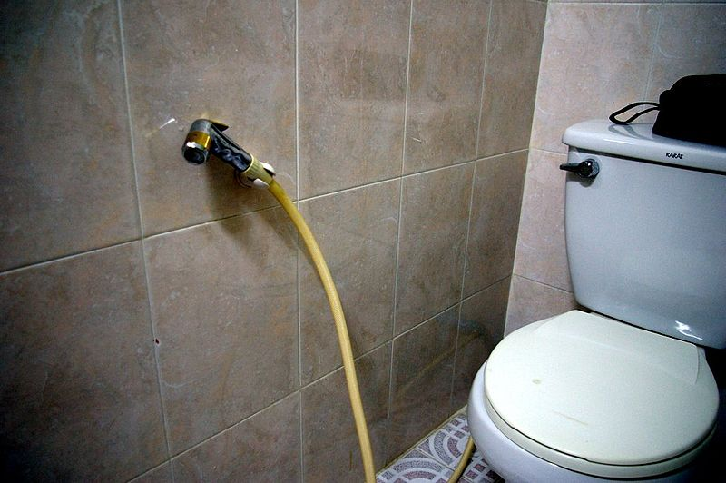

Gode råd til turen:
- Tag en stor hat med
- Prøv røv-højtryksspuleren
- Sov når du får chancen
- Se døden i øjenene ... hver dag
- Poopmap
- Mango, mango, mango
- Kameler er overvurderede
Solen skinner hele tiden. Lad være med at få kræft, og tag lige en hat med.
En oplevelse, på godt og ondt.
Det er varmt, og egypterne sover aldrig. Sov når du kan.
Cairos kaotiske trafik er en uundgåelig konfrontation.
Hvis samtlige elever får dum nums på samme tid, er der kun én vej frem.
Download det sociale medie: "Poopmap". God måde at få det bedste ud af
en dum situation
Spis og drik så meget mango du kan. Du får ikke chancen igen i Danmark.
Det gør nas i røven. Og du har det konstant som om du falder.